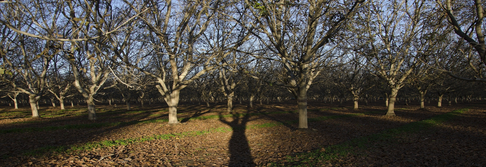

Садовий центр горіхоплідних культур «Ярославсад»
«Хто дихає садом, той дихає здоров`ям, поезією, молодістю, радістю життя, довголіттям. Поспішайте зайнятись садом, хто ще може, кому ще час» Л.П.Симиренко
Про нас:
ТОВ «Садовий центр горіхоплідних культур «Ярославсад» - це підприємство, що займається вирощуванням сертифікованих саджанців сортового горіха грецького та наданням послуг із закладення промислових садів по вирощуванню даної культури.
Про нас:
ТОВ «Садовий центр горіхоплідних культур «Ярославсад» - це підприємство, що займається вирощуванням сертифікованих саджанців сортового горіха грецького та наданням послуг із закладення промислових садів по вирощуванню даної культури.